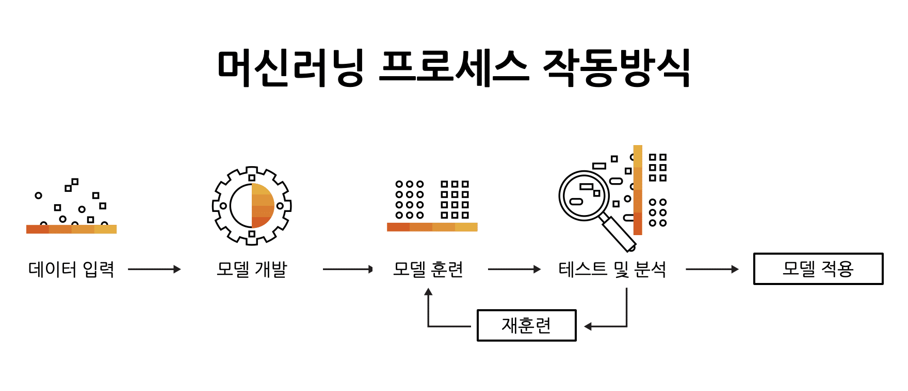
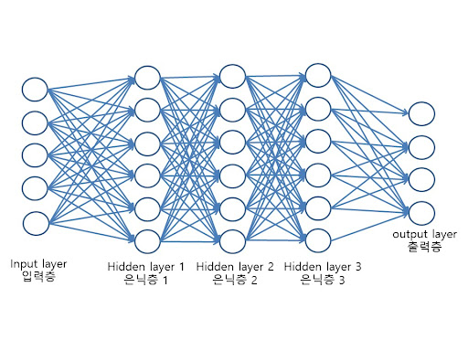

🛠️ AI의 핵심 기술: 머신러닝 vs 딥러닝
1. 머신러닝 (Machine Learning)
머신러닝은 데이터를 기반으로 패턴을 학습하고 예측을 수행하는 알고리즘을 만드는 AI의 한 분야입니다. 주로 지도 학습, 비지도 학습, 강화 학습 등으로 분류됩니다.
**지도 학습**은 정답이 있는 데이터를 학습하는 방식이며, **비지도 학습**은 데이터 내 숨겨진 구조나 패턴을 찾는 방식입니다.
2. 딥러닝 (Deep Learning)
딥러닝은 머신러닝의 하위 범주로, 인간의 뇌 신경망을 모방한 **인공 신경망**을 깊게(여러 계층으로) 쌓아 복잡한 데이터 분석과 예측을 가능하게 합니다. 특히 이미지 인식, 음성 인식, 자연어 처리 등 비정형 데이터 처리에서 압도적인 성능을 보입니다.
**신경망의 깊이(계층 수)**가 깊어질수록 스스로 복잡한 특징을 추출하는 능력이 향상됩니다.